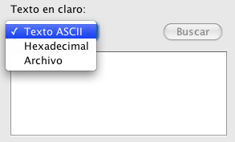
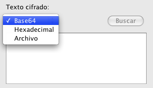
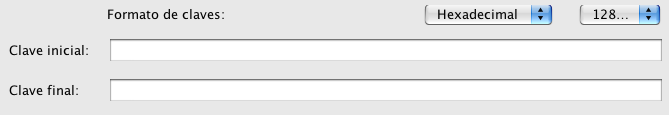

Aquí se presentan dos modos de funcionamiento principales: Servidor y Cliente
El proceso de simulación de ataques está claramente diferenciado en
tres sencillos pasos.
 Funcionamiento.
Funcionamiento.
Aquí se presentan dos modos de funcionamiento principales: Servidor y Cliente
Al elegir el modo Servidor podemos observar que todas las opciones y campos de la pantalla se habilitarán, ya que son necesarios para su ejecución. En este apartado en particular deberemos introducir el número de clientes que van a conectarse a nuestro servidor, que será con los que se comunicará para llevar a cabo el ataque, y el modo de cifrado. Esta opción nos permite elegir la manera en la que el texto en claro será tratado en la aplicación una vez se divida en bloques. Estos dos métodos son el ECB (Electronic CodeBook - Libro de código electrónico) y CBC (Cipher-Block Chaining - Cifrador de Bloques en Cadena). Al elegir el modo CBC, cuando pulsemos el botón "Ejecutar" nos aparecerá una ventana pidiéndonos que introduzcamos el vector de incialización, que es un vector de 16 bytes (32 dígitos hexadecimales) necesario para llevar a cabo este método.
Si elegimos el modo Cliente, tan sólo debemos introducir la IP del servidor al cual nos queremos conectar para realizar el ataque. En caso de que ésta fuese incorrecta o no se encontrase, el programa nos avisaría de ello, no dejándonos continuar.
 Entrada.
Entrada.
Una vez seleccionado el modo de funcionamiento, si hemos elegido actuar como servidor, tendremos que rellenar esta sección. Podemos observar que hay que introducir dos cosas distintas: el texto en claro y el texto cifrado.
En el texto en claro debemos introducir el texto o archivo antes de ser cifrado, y puede rellenarse con tres formatos distintos, que se configuran en la caja de selección que se encuentra sobre dicha área de texto: Texto ASCII, Hexadecimal y Archivo.
El texto ASCII permite la introducción de un texto estándar de hasta 1024 caracteres, el hexadecimal permite la introducción de una ristra de hasta 2048 dígitos hexadecimales, y el archivo habilita el botón "Buscar". A través de este botón accedemos a una ventana donde se nos permite elegir el archivo sin cifrar, de hasta un tamaño de 40MB, que queremos utilizar.
Por otra parte, en el texto cifrado debemos introducir el texto o archivo después de ser cifrado por la aplicación. Al igual que en el texto en claro tiene tres opciones de formato: Base64, Hexadecimal y Archivo.
Base64 es una forma de codificación de cualquier cantidad de bits que permite representarlos en caracteres imprimibles, y se permite la entrada en el programa de hasta 1388 caracteres en Base64. Para hexadecimal se permite introducir hasta 2080 dígitos hexadecimales, y la opción archivo habilita el botón buscar, que como en el texto en claro nos llevará a una ventana donde seleccionar el archivo, en este caso cifrado, que queremos utilizar. Recordamos que dicho archivo puede ser como máximo de 40 MB.
 Espacio de claves.
Espacio de claves.
Por último, deberemos introducir la clave inicial y final que usaremos para realizar la búsqueda de la clave entre ambos valores.

Aquí disponemos de varias opciones de formato en el que introducir dichas claves. En la caja de la derecha podemos seleccionar el tamaño de la clave, que será de 128, 192 o 256 bits. Resaltar que con claves más grandes el proceso de prueba de claves requerirá más tiempo. En cuanto a la caja de la izquierda, nos permite elegir si introduciremos la clave en ASCII o Hexadecimal
En caso de que hayamos seleccionado ASCII, deberemos introducir 16, 24 ó 32 caracteres estándar (para un tamaño de clave de 128, 192 ó 256 bits respectivamente).
Si hemos seleccionado hexadecimal, deberemos introducir 32, 48, ó 64 dígitos hexadecimales (para un tamaño de clave de 128, 192 ó 256 bits respectivamente).
Desde el menú "Archivo" podremos salir de esta ventana, y desde el menú "Editar" podremos copiar y pegar los campos que necesitemos.
Pulsando el botón "Ejecutar" lanzaremos la ejecución del servidor o el cliente, según hayamos elegido. Si los datos han sido introducidos correctamente, aparecerá una ventana en la que se podrá ir siguiendo el estado de la conexión y el proceso en general. Para una descripción detallada de los diferentes mensajes y su significado, pulsa aquí
La aplicación comprobará que se están introduciendo datos correctos en cada campo de la pantalla, avisando al usuario en caso de que tenga que rellenar alguno de ellos o sea incorrecto.
Mediante el botón "Cancelar" volveremos a la pantalla principal de la aplicación.
Información relacionada:
Cifrado,Descifrado, AddRoundKey, MixColumns, ShiftRows, SubBytes, Descripción de mensajes del proceso de la comunicación cliente/servidor, Base64, ECB, CBC.